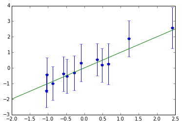

Today I decided to perform some practical testing of removing nearby SNPs: does it really help? and if so, how much?
Simulating phenotypes
I decided to try a different, larger, dataset. Such one is found in pylmm distrubution. However, I ran into an issue with it.
I don’t know how phenotype values from pylmm/data/snps.132k.clean.noX.fake.phenos were generated, but Shapiro-Wilk suggest it’s simply normal distribution. A more disturbing fact is that h2 is estimated to be almost zero. It seems that there are no causal SNPs at all.
So I decided to simulate phenotype values on my own.
First of all, I downloaded GCTA software, which can generate phenotypes according to LMM:
$ wget http://www.complextraitgenomics.com/software/gcta/gcta_1.24.4.zip
$ unzip gcta_1.24.4.zip
Then I moved to the ‘data/’ directory of PyLMM, selected a few SNP IDs from the snps.132k.clean.noX.bim file and simulated a phenotype:
$ cat causal.snps.fake
mm37-4-133676920
mm37-8-65761568
mm37-14-67815624
mm37-17-79322387
mm37-2-102530353
mm37-4-63910807
mm37-16-74943366
mm37-14-107893320
mm37-15-70067681
mm37-7-13055310
mm37-14-88557274
mm37-18-77348115
$ ./gcta64 --bfile snps.132k.clean.noX --simu-qt --out simulated.phenos --simu-causal-loci causal.snps.fake
It generated a file with phenotype values, and a .par file with the list of selected SNPs’ effects:
$ cat simulated.phenos.par
QTL RefAllele Frequency Effect
mm37-2-102530353 1 0.467511 0.476187
mm37-4-63910807 1 0.325677 -2.4254
mm37-4-133676920 1 0.412418 0.874929
mm37-7-13055310 1 0.487124 -0.349036
mm37-8-65761568 1 0.498354 -1.22581
mm37-14-67815624 1 0.240277 -0.655073
mm37-14-88557274 1 0.488778 0.56847
mm37-14-107893320 1 0.283429 1.04148
mm37-15-70067681 1 0.419196 0.0930597
mm37-16-74943366 1 0.388843 -0.484555
mm37-17-79322387 1 0.465428 0.282487
mm37-18-77348115 1 0.365039 1.03661
The values from the phenotype file don’t seem to follow normal distribution (Shapiro-Wilk p-value is 0.03), which is good. The characteristics of the distribution are these:
summary(read.table("simulated.phenos.phen")$V3)
Min. 1st Qu. Median Mean 3rd Qu. Max.
-42.37000 -8.70700 0.27810 0.03152 8.77100 40.03000
The effects are small compared to noise, but that only makes it more interesting. Let’s see how well the procedure can handle this. The relatively large number of causal SNPs also adds complexity.
The estimated mixing parameter h2 is around 0.075 and doesn’t change much when $X$ with SNPs is provided, and a refit is done.
Assessing p-values for causal SNPs
Let’s save snps and causal SNPs into arrays.
causal_ids = open("causal.snps.fake").read().split("\n")
causal_ids = set(causal_ids[:-1]) # last line is empty
# using pylmm to read files
IN = input.plink(bfile,type='b', phenoFile=pheno,normGenotype=True)
i = 0
snps = []
causal_snps = []
for snp,id in IN:
if np.var(snp) == 0.0:
continue
if id in causal_ids:
causal_snps.append((snp, id, i)) # indexes will be helpful later
snps.append(snp)
i += 1
snps = np.array(snps).T
import fastlmm.util.standardizer as stdizer
stdizer.Unit().standardize(snps) # set mean=0, var=1
And now compute P-values using the built LMM (here I use lmm_cov.py):
import scipy.stats as st
h2 = lmm_cov.findH2()['h2']
for snp, id, i in causal_snps:
x = snp.reshape((snp.shape[0], 1))
X = np.hstack((x, X0))
r2 = lmm_cov.nLLeval_2K(h2, snps=X, penalty=1e-8)
b2 = r2['beta'][:,0]
varbeta = r2['variance_beta'][:,0]
pv = st.chi2.sf(b2*b2/varbeta, 1)
print "| %s\t| %.5f |" % (id, pv[0])
The output shows that only three of them are identified (p < 0.05):
| mm37-2-102530353 |
0.33208 |
| mm37-4-63910807 |
0.00010 |
| mm37-4-133676920 |
0.06684 |
| mm37-7-13055310 |
0.29550 |
| mm37-8-65761568 |
0.00119 |
| mm37-14-67815624 |
0.68446 |
| mm37-14-88557274 |
0.48970 |
| mm37-14-107893320 |
0.00561 |
| mm37-15-70067681 |
0.58416 |
| mm37-16-74943366 |
0.74048 |
| mm37-17-79322387 |
0.56762 |
| mm37-18-77348115 |
0.43114 |
Now let’s try to apply code for avoiding proximal contamination and see how that influences the p-values.
In lmm_cov.py, the matrix WW is computed in a weird way, I had to change it to
WW = np.eye(num_exclude) - computeAKA(Sd=Sd, denom=denom, UA=UW, UUA=UUW)
and replace every -= with += for everything to make sense.
Then, I couldn’t figure out how to call nLLeval_2K with right parameters, so I simply called the low-level method nLLcore:
for snp, id, i in causal_snps:
x = snp.reshape((snp.shape[0], 1))
X = np.hstack((x, X0))
# usual results
r2_1 = lmm_cov.nLLeval_2K(h2, snps=X, penalty=1e-8)
b2 = r2_1['beta'][:,0]
varbeta = r2_1['variance_beta'][:,0]
pv1 = st.chi2.sf(b2*b2/varbeta, 1)[0]
print "| %s\t | %.5f | " % (id, pv1),
for n in [1, 2, 3, 5, 10, 20, 30]:
UW, UUW = lmm_cov.rotate(snps[:,i-n:i+n+1]/np.sqrt(snps.shape[1]))
Usnps,UUsnps = lmm_cov.rotate(X)
Sd = h2*lmm_cov.S + (1-h2)
# results with nearby SNPs removed
r2_2 = lmm_cov.nLLcore(Sd=Sd, denom=1-h2, Usnps=Usnps, UUsnps=UUsnps, UW=UW, UUW=UUW, weightW=np.ones(UW.shape[1]), penalty=1e-8)
b2 = r2_2['beta'][:,0]
varbeta = r2_2['variance_beta'][:,0]
pv2 = st.chi2.sf(b2*b2/varbeta, 1)[0]
print "%.5f |" % pv2,
print
Most P-values got closer to zero, but not enough to call it a success. And that is with 30*2+1=61 SNPs removed, which is quite a lot.
| Number of SNPs removed |
0 |
3 |
5 |
7 |
11 |
21 |
41 |
61 |
| mm37-2-102530353 |
0.33208 |
0.32986 |
0.32827 |
0.32912 |
0.32674 |
0.31521 |
0.30549 |
0.29103 |
| mm37-4-63910807 |
0.00010 |
0.00009 |
0.00009 |
0.00009 |
0.00008 |
0.00006 |
0.00003 |
0.00001 |
| mm37-4-133676920 |
0.06684 |
0.06464 |
0.06311 |
0.06176 |
0.05882 |
0.05218 |
0.04023 |
0.02979 |
| mm37-7-13055310 |
0.29550 |
0.29241 |
0.29009 |
0.28927 |
0.28496 |
0.27669 |
0.26859 |
0.24872 |
| mm37-8-65761568 |
0.00119 |
0.00111 |
0.00106 |
0.00102 |
0.00093 |
0.00075 |
0.00055 |
0.00038 |
| mm37-14-67815624 |
0.68446 |
0.68521 |
0.68596 |
0.68656 |
0.68755 |
0.68705 |
0.68727 |
0.69435 |
| mm37-14-88557274 |
0.48970 |
0.48670 |
0.48425 |
0.48245 |
0.47828 |
0.46994 |
0.44329 |
0.41584 |
| mm37-14-107893320 |
0.00561 |
0.00526 |
0.00516 |
0.00501 |
0.00452 |
0.00324 |
0.00158 |
0.00075 |
| mm37-15-70067681 |
0.58416 |
0.58259 |
0.58186 |
0.57981 |
0.57646 |
0.57024 |
0.56077 |
0.54728 |
| mm37-16-74943366 |
0.74048 |
0.73834 |
0.73689 |
0.73542 |
0.73253 |
0.72131 |
0.69880 |
0.68521 |
| mm37-17-79322387 |
0.56762 |
0.56415 |
0.56313 |
0.56259 |
0.56054 |
0.55554 |
0.54652 |
0.53043 |
| mm37-18-77348115 |
0.43114 |
0.42660 |
0.42330 |
0.42007 |
0.41291 |
0.39242 |
0.38557 |
0.38033 |
Comparing $\hat{\beta} $ with $\beta$
Since we know what are the real coefficients, it’s interesting to plot true values against estimated ones (errorbars are $\pm 2\,$SD).
No wonder that even the largest effects won’t pass Bonferroni correction:

Let’s now leave only three causal SNPs and specify the effect size in the file fed to GCTA tool:
$ cat causal.snps.fake2
mm37-2-102530353 3
mm37-4-63910807 4
mm37-4-133676920 5
$ ./gcta64 --bfile snps.132k.clean.noX --simu-qt --out simulated2.phenos --simu-causal-loci causal.snps.fake2
Running the same analysis but with the new phenotypes produces the following P-values:
| Number of SNPs removed |
0 |
3 |
5 |
7 |
11 |
21 |
41 |
61 |
| mm37-2-102530353 |
0.0006150 |
0.0005883 |
0.0005624 |
0.0005629 |
0.0005381 |
0.0004462 |
0.0003483 |
0.0002527 |
| mm37-4-63910807 |
0.0017976 |
0.0016955 |
0.0016545 |
0.0015902 |
0.0015148 |
0.0012178 |
0.0007377 |
0.0003833 |
| mm37-4-133676920 |
0.0000017 |
0.0000014 |
0.0000012 |
0.0000011 |
0.0000008 |
0.0000004 |
0.0000001 |
0.0000000 |
Although p-values are better now, estimated effect sizes are 5.0, 5.6, and 6.8 instead of 3,4,5, with SDs of 1.5–1.8. Also, large effect size doesn’t guarantee small p-value (variance can be high as well).
Conclusions
- the simple synthetic tests performed above show that GWAS is not a simple business
- removing nearby SNPs indeed helps, but it can at best reduce a p-value by an order or two of magnitude